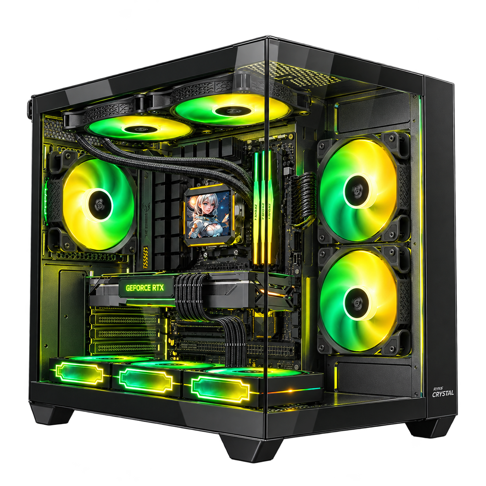
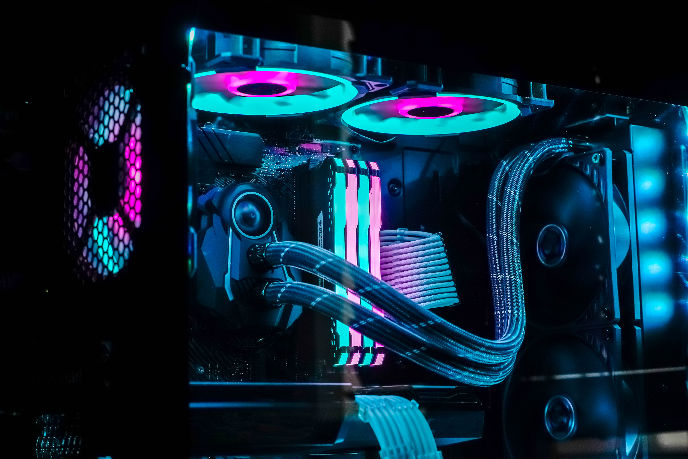
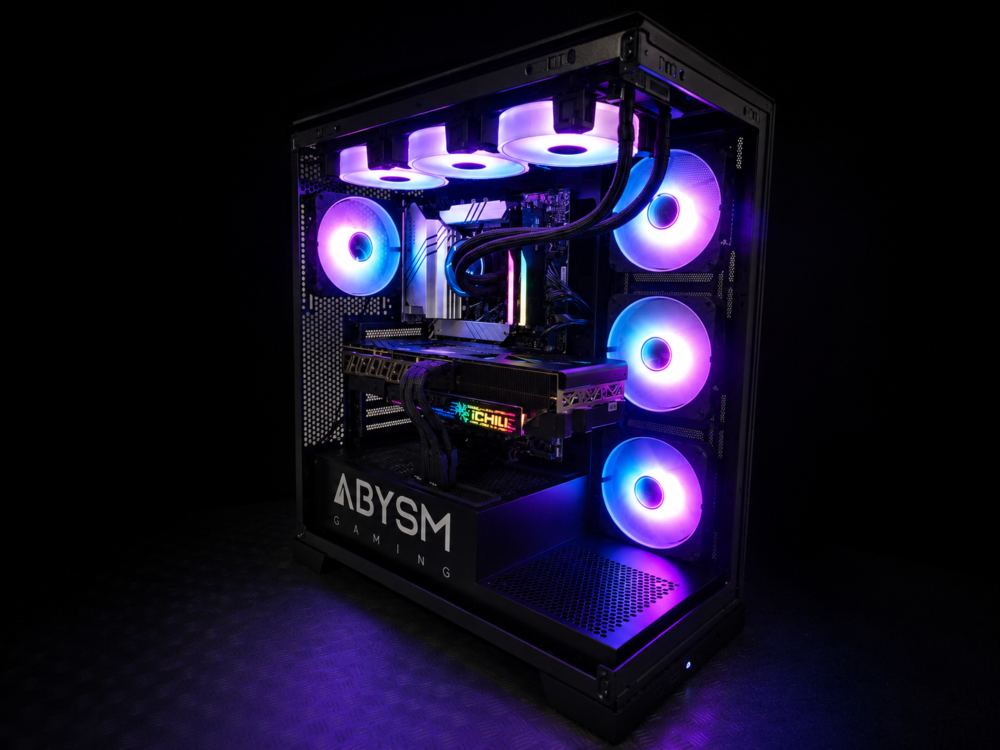
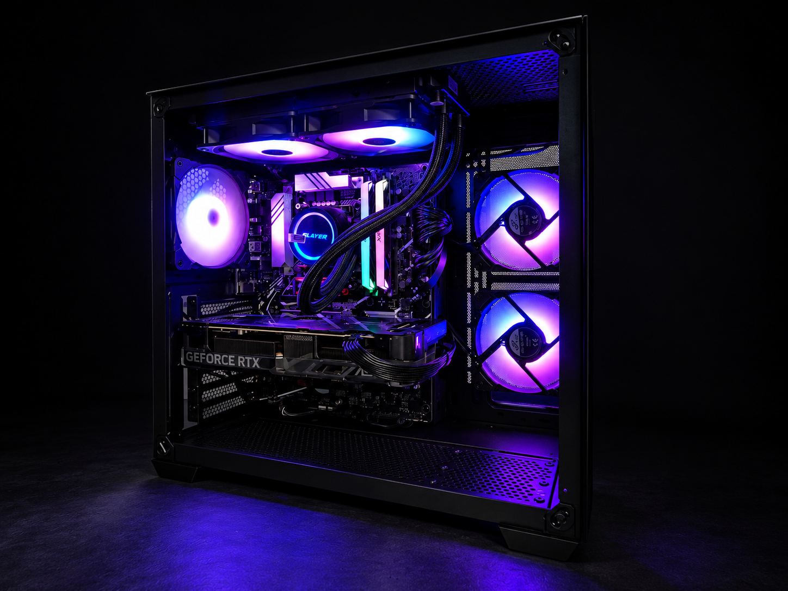

EUROSYS / GAMING SERIES
O teu próximo
nível começa aqui.
Um setup com presença. Descobre a família ASTON e encontra a máquina para o teu próximo capítulo.
Explorar a gama Conhecer a família

O TEU ESPAÇO. AS TUAS REGRAS.
Imagina o teu
próximo setup.
Da primeira partida ao último projeto.
Um espaço para entrar no teu mundo.
ENCONTRA O TEU PRÓXIMO PC
A família ASTON.
Descobre os modelos e consulta todos os detalhes na Eurosys.
Explora os modelos disponíveis
A gama completa, os preços e a disponibilidade estão no catálogo Eurosys.
Ver máquinas ASTON ↗A TUA FORMA DE JOGAR
Mais do que um PC.
O centro do teu setup.
Há máquinas que fazem parte do espaço. E há máquinas que lhe dão identidade. Explora a ASTON através do seu design e das configurações disponíveis na Eurosys.
Escolhe pelos componentes, pelo teu orçamento e pela forma como vais utilizar o computador.
APROXIMA-TE DOS DETALHES
Por dentro
do teu jogo.
Explora os pontos da imagem para conhecer o papel de cada componente. Consulta a ficha de cada máquina para confirmar o hardware incluído.

Imagem ilustrativa · Componentes variam por modelo01 / ARREFECIMENTO
O equilíbrio
também está no interior.
O arrefecimento ajuda a gerir o calor produzido pelos componentes. O sistema instalado depende da configuração de cada máquina.
Explorar as máquinas ↓


CADA DETALHE CONTA
Dá outra dimensão
ao teu espaço.
Uma identidade própria
Conhece o universo visual da família e imagina o teu próximo setup.
Encontra a tua máquina
Explora os modelos da gama e consulta os componentes de cada referência.
Escolhe com informação
Vê os detalhes, o preço e a disponibilidade na ficha de produto Eurosys.